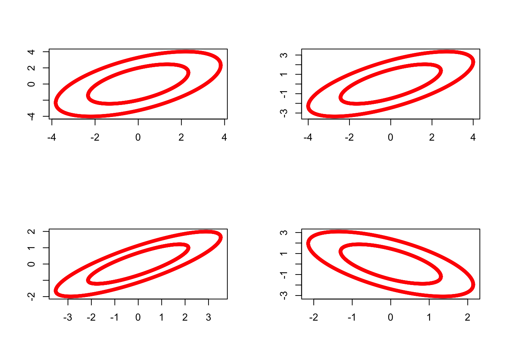

7.2 The Wishart distribution
The Wishart distribution is a multivariate generalisation of the univariate \(\chi^2\) distribution. In univariate statistics the \(\chi^2\) distribution plays an important role in inference related to the univariate normal, e.g. in the definition of Student’s \(t\) distribution. An analogous role is played by the Wishart distribution in multivariate statistics. In this section we introduce the Wishart distribution and show that for MVN random variables, the sample covariance matrix \(\boldsymbol S\) has a Wishart distribution.
Note:
\(W_p(\boldsymbol \Sigma,n)\) is a probability distribution on the set of \(p \times p\) symmetric non-negative definite random matrices.
When \(p=1\), \(W_1(1,n)\) is the \(\chi_n^2\) distribution and \(W_1(\sigma^2,n)\) is the \(\sigma^2 \chi_n^2\) distribution. This claim follows from 7.10 below.
If \(\boldsymbol X\) is the usual \(n \times p\) matrix with rows \(\boldsymbol x_i^\top\), then \[\boldsymbol M= \boldsymbol X^\top \boldsymbol X.\]
We can sample from the Wishart distribution in R using the rWishart command. For example, setting \(\boldsymbol \Sigma=\mathbf I_2\) and using 2 degrees of freedom, we can generate 4 random samples \(\boldsymbol M_1, \ldots, \boldsymbol M_4 \sim W_2(\mathbf I_2, 2)\) as follows:
Visualizing these by plotting the ellipses with \(\boldsymbol x^\top \boldsymbol M_i \boldsymbol x=c\) for some constant \(c\), we can see the variability in these random matrices:

7.2.1 Properties
We now use the definition of \(W_p(\boldsymbol \Sigma, n)\) to prove some important results.
Note that an alternative form of the above result is \[\frac{ \boldsymbol a^\top \boldsymbol M\boldsymbol a}{ \boldsymbol a^\top \boldsymbol \Sigma\boldsymbol a} \sim \chi_n^2.\]
Note, however, that the \(m_{ii}\), \(i=1,\ldots,p\), are not, in general, independent.
7.2.2 Cochran’s theorem
Our next result is known as Cochran’s theorem. We use Cochran’s theorem to show that sample covariance matrices have a scaled Wishart distribution.
First though, recall the definition of projection matrices from Section 2.3.3. Namely, that \(\boldsymbol P\) is a projection matrix if \(\boldsymbol P^2=\boldsymbol P\).
Proof. We first of all prove the result in the particular case \(\boldsymbol \Sigma= {\mathbf I}_p\) and then consider the general case. Using the Spectral Decomposition Theorem 3.3 and noting that the eigenvalues of projection matrices must be either \(0\) or \(1\), we may write \[ {\mathbf P}=\sum_{j=1}^r \boldsymbol q_j \boldsymbol q_j^\top \qquad \hbox{and} \qquad (\mathbf I_n-{\mathbf P})=\sum_{j=r+1}^n \boldsymbol q_j \boldsymbol q_j^\top \] where \(\boldsymbol q_1, \ldots , \boldsymbol q_n\mathbb{R}^n\) are mutually orthogonal unit vectors. Then \[\begin{align} \boldsymbol X^\top \boldsymbol P\boldsymbol X&= \boldsymbol X^\top \left (\sum_{j=1}^r \boldsymbol q_j \boldsymbol q_j^\top \right) \boldsymbol X\nonumber \\ & =\sum_{j=1}^r \boldsymbol X^\top \boldsymbol q_j \boldsymbol q_j^\top \boldsymbol X=\sum_{j=1}^r \boldsymbol y_j \boldsymbol y_j^\top, \tag{7.8} \end{align}\] and similarly, \[\begin{align} \boldsymbol X^\top (\mathbf I_n -\boldsymbol P) \boldsymbol X&= \boldsymbol X^\top \left (\sum_{j=r+1}^n \boldsymbol q_j \boldsymbol q_j^\top \right) \boldsymbol X\nonumber \\ & =\sum_{j=r+1}^n \boldsymbol X^\top \boldsymbol q_j \boldsymbol q_j^\top \boldsymbol X=\sum_{j=r+1}^n \boldsymbol y_j \boldsymbol y_j^\top, \tag{7.9} \end{align}\] where \(\boldsymbol y_j=\boldsymbol X^\top \boldsymbol q_j\) is a \(p \times 1\) vector. We shall now prove that the \(\boldsymbol y_j\) are IID \(N_p({\mathbf 0}_p, \mathbf I_p)\). Write \(\boldsymbol X=(\boldsymbol x_{[1]}, \ldots , \boldsymbol x_{[p]})\), where \(\boldsymbol x_{[u]}\) is column \(u\) of \(\boldsymbol X\). Then \(\boldsymbol x_{[1]}, \ldots , \boldsymbol x_{[p]}\) are IID \(N_n({\mathbf 0}_n ,\mathbf I_n)\). Moreover, \[ \boldsymbol y_j=\boldsymbol X^\top \boldsymbol q_j = \left [ \begin{array}{c} \boldsymbol q_j^\top \boldsymbol x_{[1]}\\ \boldsymbol q_j^\top \boldsymbol x_{[2]}\\ ..\\ ..\\ ..\\ \boldsymbol q_j^\top \boldsymbol x_{[p]} \end{array} \right ]. \] But \[\begin{align} {\mathbb{E}}[\boldsymbol q_j^\top \boldsymbol x_{[u]} \boldsymbol q_k^\top \boldsymbol x_{[v]}] &={\mathbb{E}}[\boldsymbol q_j^\top \boldsymbol x_{[u]} \boldsymbol x_{[v]}^\top \boldsymbol q_k]\nonumber \\ &=\boldsymbol q_j^\top {\mathbb{E}}[\boldsymbol x_{[u]} \boldsymbol x_{[v]}^\top ]\boldsymbol q_k \nonumber\\ &=\boldsymbol q_j^\top \left (\delta_{uv}\mathbf I_n \right)\boldsymbol q_k \nonumber\\ &=\boldsymbol q_j^\top \boldsymbol q_k \delta_{uv}\nonumber\\ &=\delta_{jk}\delta_{uv}, \tag{7.10} \end{align}\] where \(\delta\) is the Kronecker \(\delta\) defined by \[ \delta_{ab}=\begin{cases} 0 &\text{if} \quad a \neq b\\ 1 &\text{if} \quad a=b \end{cases}. \] If follows immediately from (7.10) that \[ {\mathbb{V}\operatorname{ar}}(\boldsymbol y_j)=\mathbf I_p \qquad {\mathbb{C}\operatorname{ov}}(\boldsymbol y_j , \boldsymbol y_k)={\mathbf 0}_{pp} \quad \text{if} \quad j \neq k. \] By Proposition 7.4, the \(\boldsymbol y_j\), \(j=1,\ldots , n\), are IID \(N_p({\mathbf 0}_p , \mathbf I_p)\), and therefore it follows from the definition of the Wishart distribution that, when \(\boldsymbol \Sigma=\mathbf I_p\), (7.8) has a Wishart \(W_p(\mathbf I_p,r)\) distribiton, (7.9) has a Wishart \(W_p(\mathbf I_p, n-r)\) distrubtion. Moreover, these random Wishart matrices are independent becasue the \(\boldsymbol y_j\) are all independent.
Finally, we consider the case of a general covariance matrix \(\boldsymbol \Sigma\). We have proved that (7.6) holds when \(\boldsymbol \Sigma=\mathbf I_p\), so pre-multiply both sides by the matrix square root \(\boldsymbol \Sigma^{1/2}\), and post-multiply both sides by \(\boldsymbol \Sigma^{1/2}\). This corresponds to the case where the \(\boldsymbol x_i\) are IID \(N_p({\mathbf 0}_p, \boldsymbol \Sigma)\). Then, using Proposition 7.9, \[ \boldsymbol \Sigma^{1/2} W_p(\mathbf I_p, t)\boldsymbol \Sigma^{1/2} \stackrel{d}{=} W_p(\boldsymbol \Sigma^{1/2} \boldsymbol \Sigma^{1/2}, t) \stackrel{d}{=}W_p(\boldsymbol \Sigma,t), \] when \(t=r\) and \(t=n-r\). Moreover, since \(\boldsymbol \Sigma^{1/2}\) is a non-random matrix, independence is preserved when we pre- and post-multiply by \(\boldsymbol \Sigma^{1/2}\), and the result is proved.